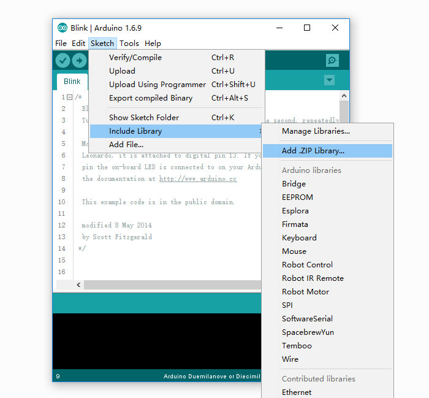
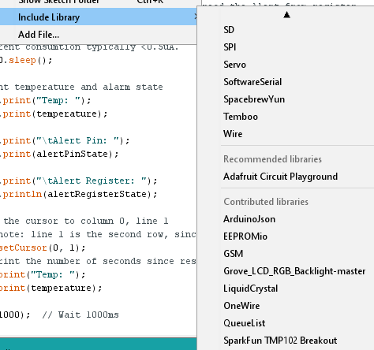
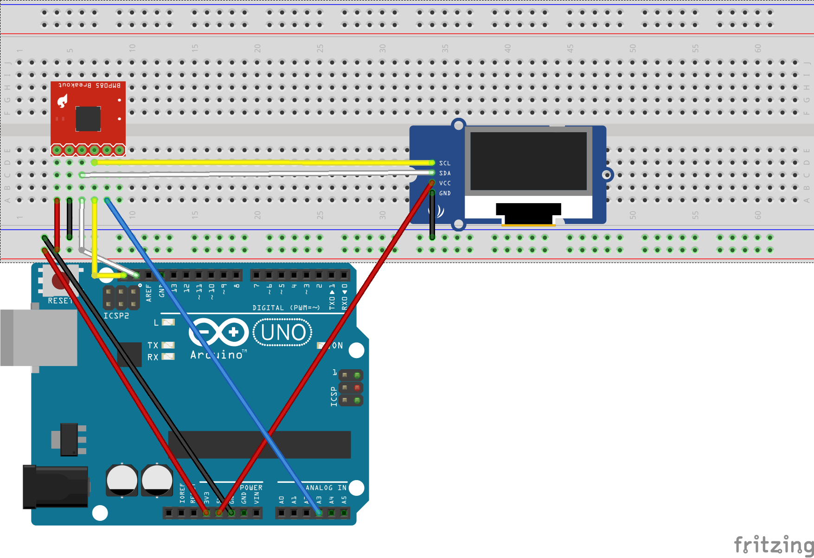
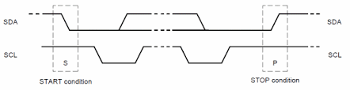
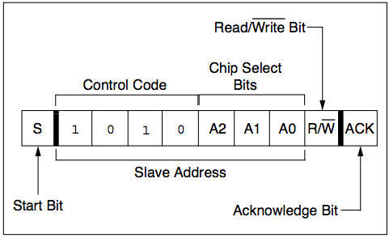

This lab introduces the I2C protocol. You will build a simple temperature sensing application using I2C devices.
In this exercise you will: - build a simple circuit using Arduino development board - use built-in I2C capabilities to connect I2C devices(TMP102 and LCD display) - Write a program to read and display the temperature.
Download the following libraries:
Both of these libraries are specific to their devices however both require I2C protocol (that's why both devices are on the same bus). They provide nice programming abstractions that allow us to access the devices from the arduino program.
Click on Sketch > Include Library > Add .ZIP Library. 
Add both libraries. To check if the install was successfull, click on Sketch > Include Library > 
Build the following circuit: 
I2C (Inter-Integrated Circuit) is a short distance serial interface that requires only 2 bus lines for data transfer. You will notice in the circuit you built that both the temp sensor and the LCD display are on the same 2 wire bus connected to the Arduino board, a serial data line (SDA) and a serial clock line (SCL). I2C is a Master/Slave protocol - only a Master can initiate a data transfer and Slaves respond to the Master.
A Start condition is issued by the Master device to inform all the slave devices that something is about to be transmitted on the bus. As a result, all connected slave devices will listen to the serial data line for instructions. The Start condition is issued by pulling the SDA line low followed by the SCL line. Once the data transfer is finished, the bus Master sends a Stop condition to inform other devices that it would like to release the bus. 
Each device connected to the bus is software addressable by a unique 7-bit address. The first byte sent after the Start condition is known as Control byte. The first seven bits of the control byte make up the slave address, whereas the eighth bit (LSB) indicates Read/Write. A ‘zero’ in the LSB of the first byte indicates that the Master will write information to a selected slave. A ‘one’ in this position indicates that the Master will read data from the slave. Some devices have their I2C addresses fixed (e.g. the LCD). Those devices that allow the address modification(e.g. the temp sensor), typically the first four bits are fixed and the next three bits are set by hardware address pins (A0, A1, and A2) that allow the user to modify the I2C address allowing up to eight of the same devices to operate on the I2C bus. 
The following Arduino sketch scans the I2C bus for active devices. Copy and run this code on your arduino; you should detect the LCD and the sparkfun Controller.
#include <Wire.h>
void setup()
{
Wire.begin();
Serial.begin(9600);
while (!Serial); // Leonardo: wait for serial monitor
Serial.println("\nI2C Scanner");
}
void loop()
{
byte error, address;
int nDevices;
Serial.println("Scanning...");
nDevices = 0;
for(address = 1; address < 127; address++ )
{
// The i2c_scanner uses the return value of
// the Write.endTransmisstion to see if
// a device did acknowledge to the address.
Wire.beginTransmission(address);
error = Wire.endTransmission();
if (error == 0)
{
Serial.print("I2C device found at address 0x");
if (address<16)
Serial.print("0");
Serial.print(address,HEX);
Serial.println(" !");
nDevices++;
}
else if (error==4)
{
Serial.print("Unknown error at address 0x");
if (address<16)
Serial.print("0");
Serial.println(address,HEX);
}
}
if (nDevices == 0)
Serial.println("No I2C devices found\n");
else
Serial.println("done\n");
delay(5000); // wait 5 seconds for next scan
}Look at the code and make sure you understand what the logic is. You should see something like the following:
Scanning...
I2C device found at address 0x03 !
I2C device found at address 0x3E !
I2C device found at address 0x48 !
I2C device found at address 0x62 !
I2C device found at address 0x70 !
doneNotice there is more than one device. Suggest why this might be the case and use the internet to prove it!
Look at the code in the last page. You will notice that you can configure the tmp102 sensor with an upper and lower bound for the temperature. The alert pin can be used to detect if the temperature is outside this range. Modify the program to display a suitable message/colour on the LCD if the predifined temp range is not satisfied.
The following Arduino sketch reads the temperature from the TMP102 sensor and prints it to the LCD
/******************************************************************************
I2C Exercise
Sept 15th 2017
~
This sketch configures the TMP102 temperature sensor and prints the
temperature on a Grove-LCD RGB
Resources:
Wire.h (included with Arduino IDE)
SparkFunTMP102.h
rgb_lcd.h
Development environment specifics:
Arduino 1.8 IDE
Arduino Uno
******************************************************************************/
#include <Wire.h> // Used to establied serial communication on the I2C bus
#include <SparkFunTMP102.h> // Used to send and recieve specific information from our sensor
#include <rgb_lcd.h> // Used to send temp information to LCD
const int ALERT_PIN = A3;
rgb_lcd lcd;
const int colorR = 255;
const int colorG = 0;
const int colorB = 0;
TMP102 tmpSensor(0x48); // Initialize sensor at I2C address 0x48
void setup() {
Serial.begin(9600); // Start serial communication at 9600 baud
pinMode(ALERT_PIN,INPUT); // Declare alertPin as an input
tmpSensor.begin(); // Join I2C bus
// Initialize tmpSensor settings
// These settings are saved in the sensor, even if it loses power
// set the number of consecutive faults before triggering alarm.
// 0-3: 0:1 fault, 1:2 faults, 2:4 faults, 3:6 faults.
tmpSensor.setFault(0); // Trigger alarm immediately
// set the polarity of the Alarm. (0:Active LOW, 1:Active HIGH).
tmpSensor.setAlertPolarity(1); // Active HIGH
// set the sensor in Comparator Mode (0) or Interrupt Mode (1).
tmpSensor.setAlertMode(0); // Comparator Mode.
// set the Conversion Rate (how quickly the sensor gets a new reading)
//0-3: 0:0.25Hz, 1:1Hz, 2:4Hz, 3:8Hz
tmpSensor.setConversionRate(2);
//set Extended Mode.
//0:12-bit Temperature(-55C to +128C) 1:13-bit Temperature(-55C to +150C)
tmpSensor.setExtendedMode(0);
//set T_HIGH, the upper limit to trigger the alert on
tmpSensor.setHighTempC(29.4); // set T_HIGH in C
//set T_LOW, the lower limit to shut turn off the alert
tmpSensor.setLowTempC(26.67); // set T_LOW in C
// set up the LCD's number of columns and rows:
lcd.begin(16, 2);
lcd.setRGB(colorR, colorG, colorB);
// Print a message to the LCD.
lcd.print("hello, IoT3");
delay(1000);
}
void loop()
{
float temperature;
boolean alertPinState, alertRegisterState;
// Turn sensor on to start temperature measurement.
// Current consumtion typically ~10uA.
tmpSensor.wakeup();
// read temperature data
temperature = tmpSensor.readTempC();
// Check for Alert
alertPinState = digitalRead(ALERT_PIN); // read the Alert from pin
alertRegisterState = tmpSensor.alert(); // read the Alert from register
// Place sensor in sleep mode to save power.
// Current consumtion typically <0.5uA.
tmpSensor.sleep();
// Print temperature and alarm state
Serial.print("Temp: ");
Serial.print(temperature);
Serial.print("\tAlert Pin: ");
Serial.print(alertPinState);
Serial.print("\tAlert Register: ");
Serial.println(alertRegisterState);
// set the cursor to column 0, line 1
// (note: line 1 is the second row, since counting begins with 0):
lcd.setCursor(0, 1);
// print the number of seconds since reset:
lcd.print("Temp: ");
lcd.print(temperature);
delay(1000); // Wait 1000ms
}The following Arduino sketch reads the temperature from the TMP102 sensor and prints it to the LCD
/******************************************************************************
I2C Exercise
Sept 15th 2017
~
This sketch configures the TMP102 temperature sensor and prints the
temperature on a Grove-LCD RGB
Resources:
Wire.h (included with Arduino IDE)
SparkFunTMP102.h
rgb_lcd.h
Development environment specifics:
Arduino 1.8 IDE
Arduino Uno
******************************************************************************/
#include <Wire.h> // Used to establied serial communication on the I2C bus
#include <SparkFunTMP102.h> // Used to send and recieve specific information from our sensor
#include <rgb_lcd.h> // Used to send temp information to LCD
const int ALERT_PIN = A3;
rgb_lcd lcd;
const int colorR = 255;
const int colorG = 0;
const int colorB = 0;
TMP102 tmpSensor(0x48); // Initialize sensor at I2C address 0x48
void setup() {
Serial.begin(9600); // Start serial communication at 9600 baud
pinMode(ALERT_PIN,INPUT); // Declare alertPin as an input
tmpSensor.begin(); // Join I2C bus
// Initialize tmpSensor settings
// These settings are saved in the sensor, even if it loses power
// set the number of consecutive faults before triggering alarm.
// 0-3: 0:1 fault, 1:2 faults, 2:4 faults, 3:6 faults.
tmpSensor.setFault(0); // Trigger alarm immediately
// set the polarity of the Alarm. (0:Active LOW, 1:Active HIGH).
tmpSensor.setAlertPolarity(1); // Active HIGH
// set the sensor in Comparator Mode (0) or Interrupt Mode (1).
tmpSensor.setAlertMode(0); // Comparator Mode.
// set the Conversion Rate (how quickly the sensor gets a new reading)
//0-3: 0:0.25Hz, 1:1Hz, 2:4Hz, 3:8Hz
tmpSensor.setConversionRate(2);
//set Extended Mode.
//0:12-bit Temperature(-55C to +128C) 1:13-bit Temperature(-55C to +150C)
tmpSensor.setExtendedMode(0);
//set T_HIGH, the upper limit to trigger the alert on
tmpSensor.setHighTempC(29.4); // set T_HIGH in C
//set T_LOW, the lower limit to shut turn off the alert
tmpSensor.setLowTempC(26.67); // set T_LOW in C
// set up the LCD's number of columns and rows:
lcd.begin(16, 2);
lcd.setRGB(colorR, colorG, colorB);
// Print a message to the LCD.
lcd.print("hello, IoT3");
delay(1000);
}
void loop()
{
float temperature;
boolean alertPinState, alertRegisterState;
// Turn sensor on to start temperature measurement.
// Current consumtion typically ~10uA.
tmpSensor.wakeup();
// read temperature data
temperature = tmpSensor.readTempC();
// Check for Alert
alertPinState = digitalRead(ALERT_PIN); // read the Alert from pin
alertRegisterState = tmpSensor.alert(); // read the Alert from register
// Place sensor in sleep mode to save power.
// Current consumtion typically <0.5uA.
tmpSensor.sleep();
// Print temperature and alarm state
Serial.print("Temp: ");
Serial.print(temperature);
Serial.print("\tAlert Pin: ");
Serial.print(alertPinState);
Serial.print("\tAlert Register: ");
Serial.println(alertRegisterState);
// set the cursor to column 0, line 1
// (note: line 1 is the second row, since counting begins with 0):
lcd.setCursor(0, 1);
// print the number of seconds since reset:
lcd.print("Temp: ");
lcd.print(temperature);
delay(1000); // Wait 1000ms
}